Salí de un hotel de carretera bastante bueno en la estación de servicio Los Chopos. De ahí seguiré por la A-231 que lleva de Palencia a León hacia Carrión de los Condes. Este pueblo junto a Sahagún y Aguilar de Campoo componen los pueblos más importantes de Palencia. En Carrión de los Condes y en Sahagún además se exponen Las Edades del Hombre en 2021 que reúne las figuras, tallas y reliquias más importantes de las principales iglesias y edificios religiosos. Cada año va cambiando de provincia y este año era en Palencia.
En Carrión de los condes existen varios sitios por los que merecen la pena visitar el pueblo. El pueblo recibe el nombre del río que lo atraviesa y en el cual se construyo un puente en la edad media.
A la entrada del mismo y fuera de lo que pudo ser el recinto amurallado se encuentra el monasterio de san Zoilo. Comenzado a construir en el siglo X por monjes de la orden del Cluny. Esta ubicado en sitio de paso del camino de Santiago y cogió fama por dispensar pan y vino a los peregrinos. A partir del siglo XV conseguiría mas importancia y sería construido el claustro mayor. A partir del siglo XVIII se convertiría en colegio de educación secundaria. Actualmente es un hotel de gran importancia.

 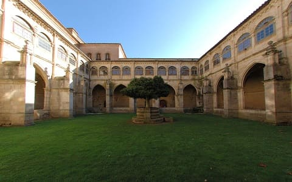
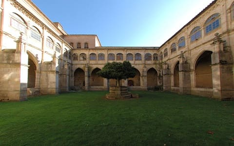
Las iglesias más importantes del pueblo son la iglesia de Santiago y la iglesia de Santa María del Camino, ambas románicas con unas puertas talladas con diferentes figuras.
La iglesia de Santiago data del siglo XII y su portada es muy interesante. Es de arco de medio punto con una arquivolta en sus columnas, rematada por un friso con altorrelieves de la revelación del apocalipsis de Juan evangelista. Por dentro es muy sencilla ya que actualmente se usa como museo. En ella estaban las edades del Hombre expuestas.
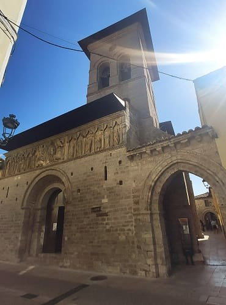
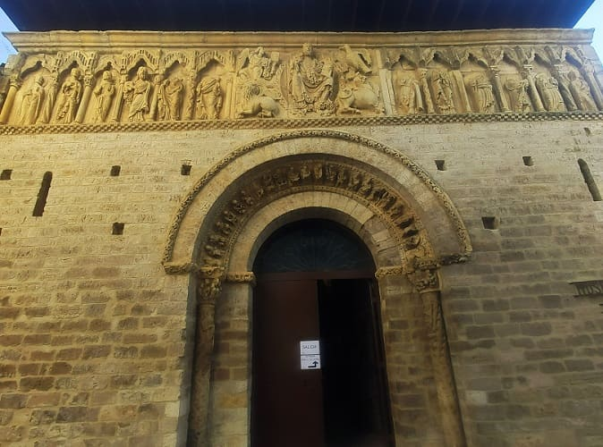
La otra iglesia importante es la iglesia de Santa María del Camino, edificada en paralelo a la de Santiago. Es bastante más grande y en la portada también tiene un curioso relieve de la adoración de los Reyes Magos. Las columnas tiene capiteles con figuras de personas y animales fantásticos. Por dentro tiene un retablo barroco pero la planta es románica.
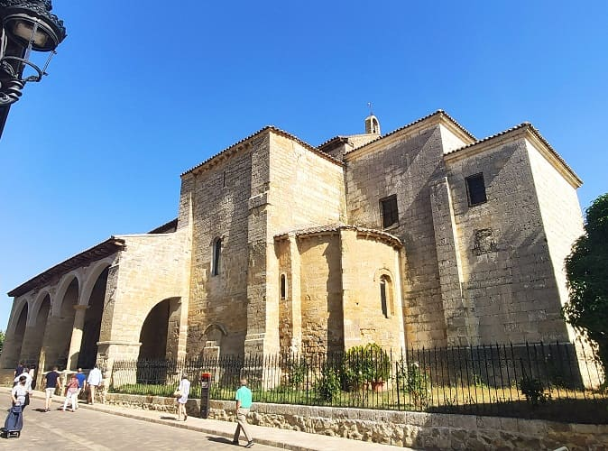
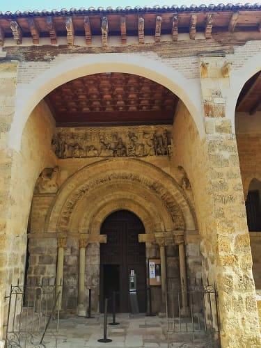
La plaza mayor es grande y esta al lado de la iglesia de Santiago. Otra iglesia a ver es la iglesia de Nuestra señora de Belén. Lo mejor de esta iglesia es el retablo, de mucho más valor que el de las otras dos iglesias, de estilo plateresco del siglo XVI con distintas imágenes del Nuevo Evangelio. Muy cerca se encuentra una ermita donde se guardan los pasos de semana Santa. Otras iglesias de menos importancia cultural son san Andrés y san Francisco. También cuenta el pueblo con un monasterio, el de santa Clara.
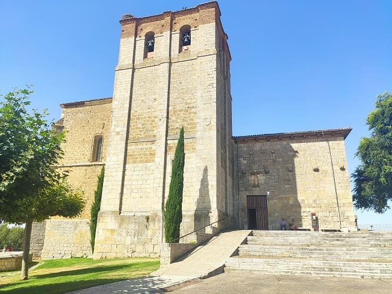
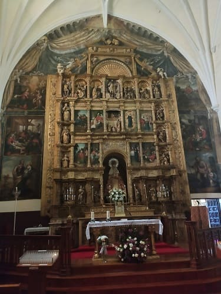
Dicho esto, Carrión es un buen exponente del arte religioso del estilo románico de Palencia.
Volvemos por la carretera hacia el este para ver diferentes pueblos con joyas románicas. Vamos dirección Fromista y antes de llegar entraremos en Villalcazar de Sirga nos encontramos con la imponente iglesia de Santa María La Blanca. Esta iglesia tuvo mucha importancia en la edad Media, lugar de enterramiento del hermano de Alfonso X el Sabio y de su esposa. Destaca la portada de entrada y en general todo el templo. Habiéndome parecido una de los mejores monumentos de Palencia, junto a la catedral y a la iglesia de Tamara de Campos.
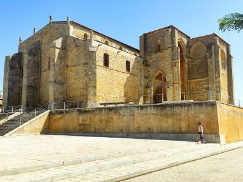
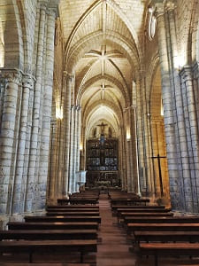

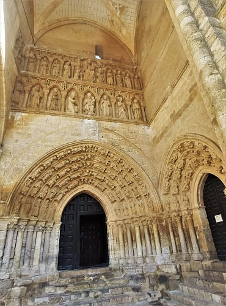
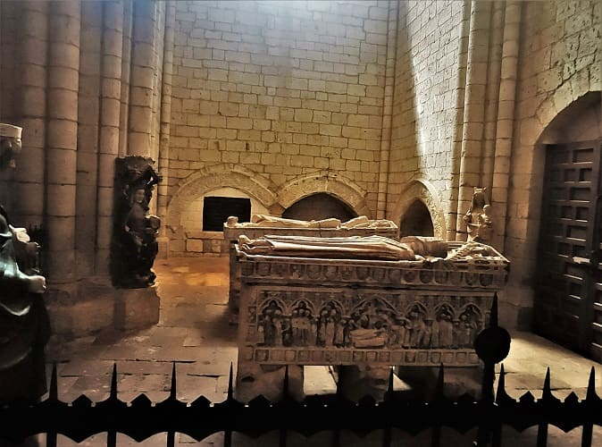
Una vez vista esta iglesia ponemos rumbo a Fromista donde encontraremos la iglesia romanica San Martín de Tours, que da nombre al estilo fromista, un estilo muy sencillo que proviene del románico. En esta iglesia destacan los capiteles y el estilo sobrio interior.
 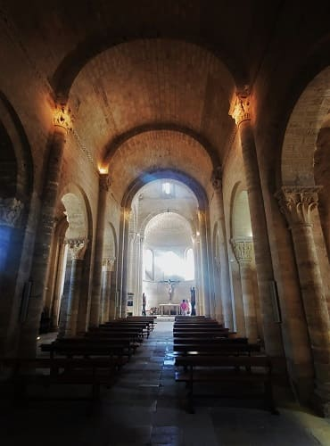
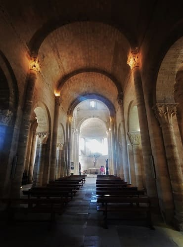
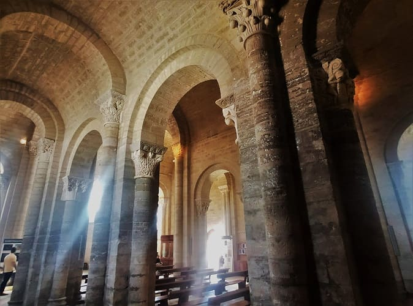
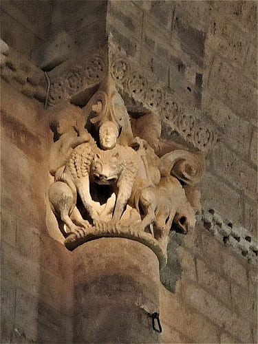
Otras iglesias románicas que ver son la iglesia de San Pedro, de estilo gótico y abierta para uso religioso ya que las demás están como museo y la iglesia de Santa María del Castillo que tiene un museo audiovisual en su interior. Además se puede ver el sistema de esclusas del canal de Castilla, paraje natural donde existen caminos para bicicleta y senderismo.
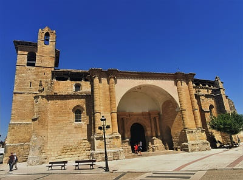


Tras salir de Fromista, visito Santoyo donde se encuentra una iglesia importante del románico palentino, la iglesia de San Juan Bautista. Es del siglo XII al igual que las de Carrión pero la portada es más del siglo XVI de estilo plateresco o a mi entender más de estilo flamígero, muy recargada. Tiene unas dimensiones muy grandes y en ella destaca el retablo renacentista.
Seguidamente, parto a Tamara de Campos donde se encuentran la iglesia de San Hipolito el Real, respectivamente, recientemente restaurada y limpiada por dentro. Esta iglesia es más moderna que las anteriores, datando de finales del siglo XIV y siendo de estilo gótico. Los retablos de estas dos iglesias son auténticas joyas, y en San Hipolito además se encuentran diferentes figuras talladas en el interior en los muros. Esta iglesia es más parecida a una catedral que bien podría ser colegiata, y consta de 3 naves. Cuenta con una decoración en piedra interior. El retablo es de estilo barroco y tiene algunos otros retablos en sus laterales.
 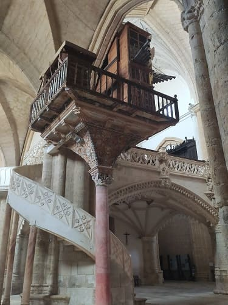
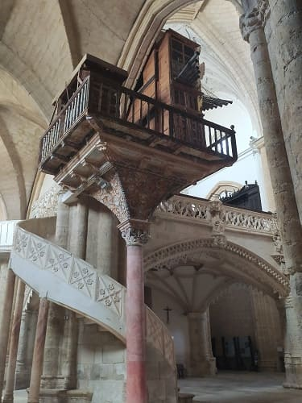
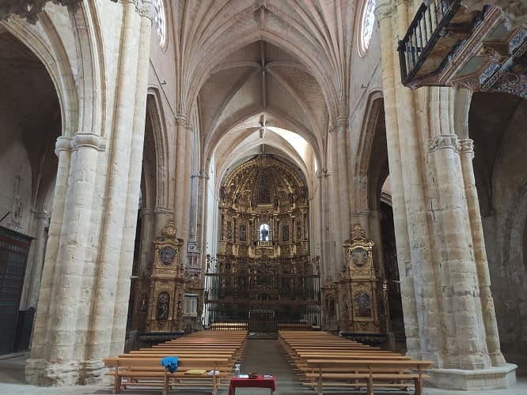
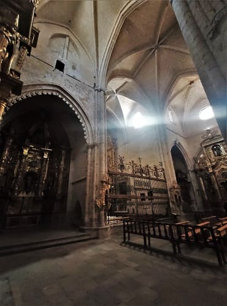
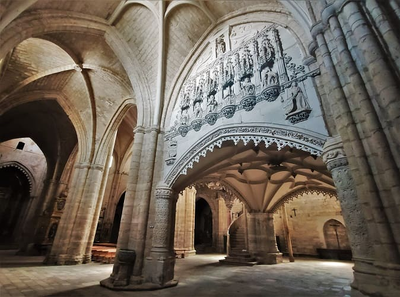
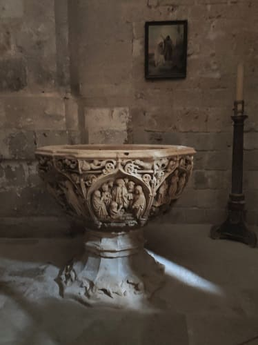
Al terminar de ver estas dos iglesias viajare hacia Palencia. Allí comeré en un restaurante con un menú bastante completo cerca de la rotonda dedicada al campesino Ibérico. En Palencia, me moveré en paralelo al río Carrión para entrar en el casco histórico a la altura del Puente Mayor.
 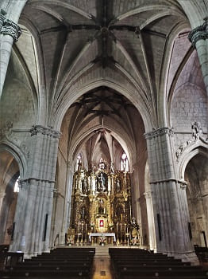
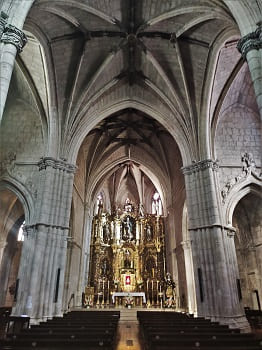


© 2016 - All Rights Reserved - Diseñada por Sergio López Martínez
El sitio se mantiene gracias a la publicidad, por favor Desactiva Adblock para seguir navegando
He desactivado Adblock![[Valid RSS]](https://www.onepointsync.com/wp-content/uploads/2016/08/valid-rss-rogers.png "Validate my RSS feed")